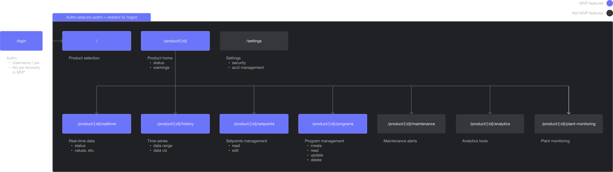
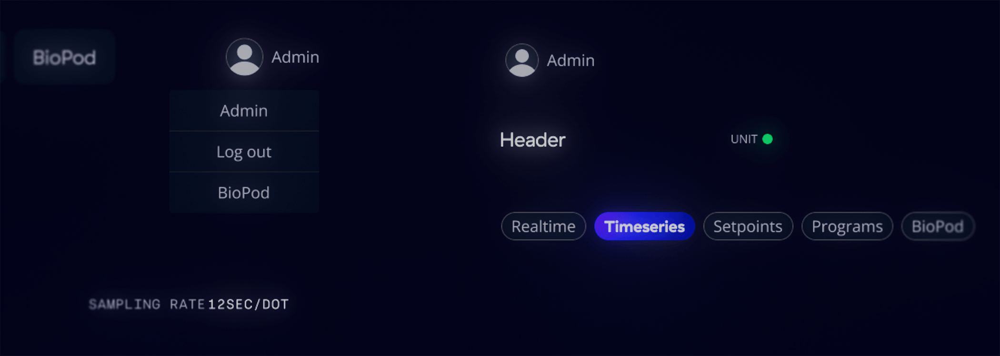
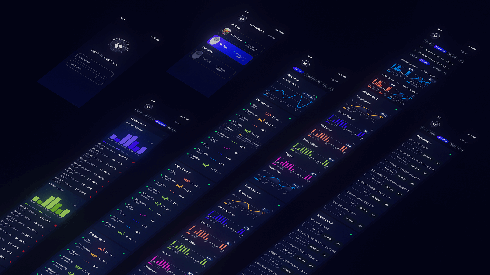
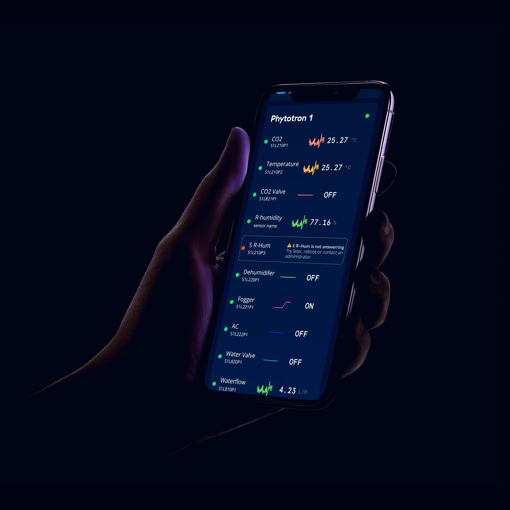
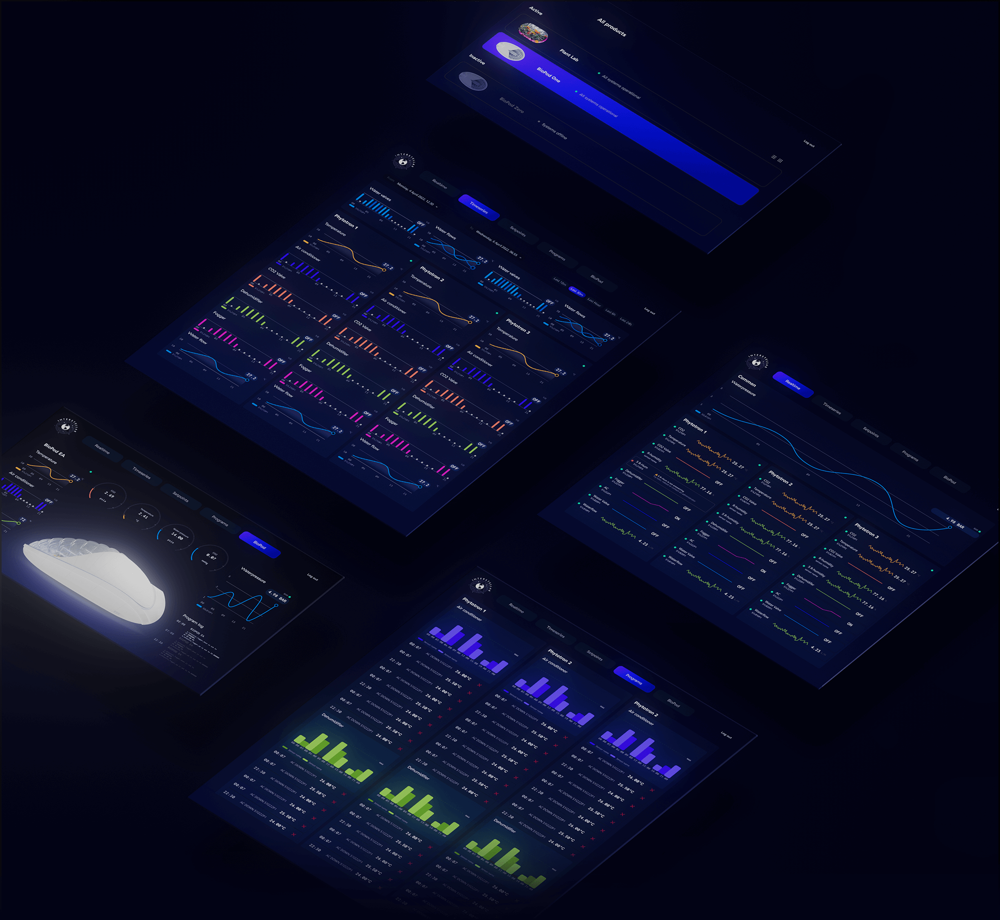
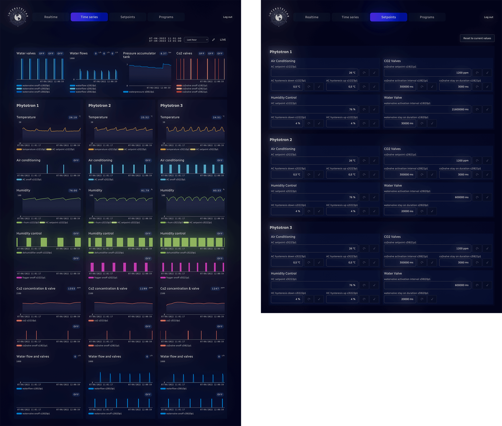
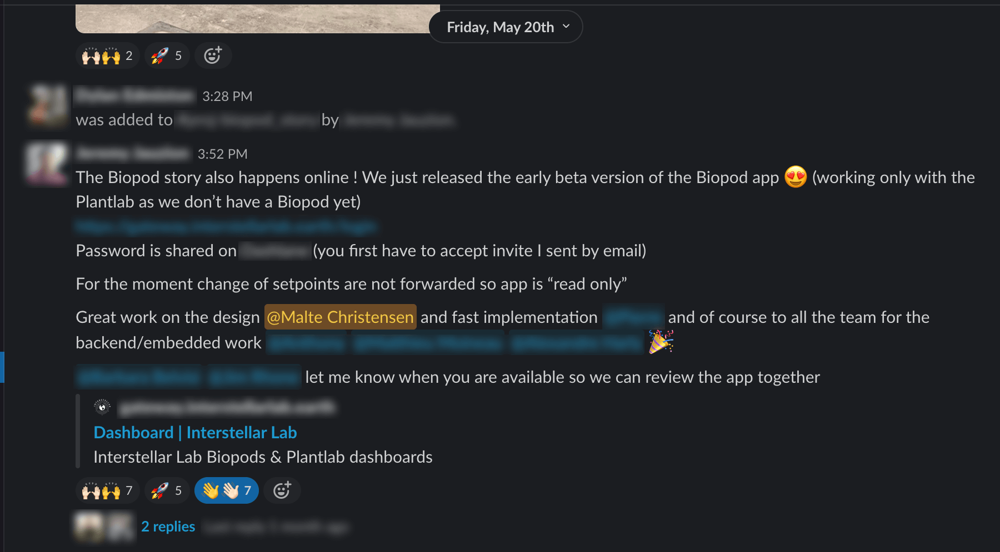

<!DOCTYPE html>
<html lang="en-US">

<head>
	<title>Case study: Interstellar</title>
	<meta charset="UTF-8">
	<meta name="viewport" content="width=device-width, initial-scale=1.0, maximum-scale=1.0, user-scalable=0">
	<link rel='stylesheet' id='wp-block-library-css'  href='wp-includes/css/dist/block-library/style.min923e.css?ver=5.4.10' type='text/css' media='all' />

	<link rel='stylesheet' id='smooth-css'  href='wp-content/themes/smooth/style.css?ver=1.0.0' type='text/css' media='all' />

	<link rel="preconnect" href="https://fonts.googleapis.com">

	<link rel="preconnect" href="https://fonts.gstatic.com" crossorigin>

	<link href="https://fonts.googleapis.com/css2?family=Instrument+Sans&display=swap" rel="stylesheet">

	<script type='text/javascript' src='wp-content/themes/smooth/js/jquery-3.5.1.min923e.js?ver=5.4.10'></script>
	<script type='text/javascript' src='wp-content/themes/smooth/js/f.min0ba6.js?ver=1.0.6'></script>

<style type="text/css">


body main aside.cover:before {
    content: '';
    position: absolute;

    width: 100%;
    height: 100%;
    background: rgba(255, 255, 255, 0) url("interstellar_assets/Interstellar-Logo-Light-300.svg") no-repeat center center !important;
		backdrop-filter: blur(40px);
    background-size: 100%;
    z-index: 2;
    -webkit-transition: opacity 0.4s ease-out;
    -moz-transition: opacity 0.4s ease-out;
    -ms-transition: opacity 0.4s ease-out;
    -o-transition: opacity 0.4s ease-out;
    transition: opacity 0.4s ease-out;
}

@media screen and (max-width: 680px) {

  body main aside.cover:before {
      background: rgba(255, 255, 255, 0.4) url("interstellar_assets/Interstellar-Logo-Light-200.svg") no-repeat center center !important;
  }}
</style>

</head>

<body>

<main>


		<!--<aside class="cover active" style="background: transparent;">
			<video autoplay loop muted playsinline class="bottom-center">
				<source src="interstellar_assets/Dashboard-2-blur.mp4" type="video/mp4">
			</video>
		</aside>-->


		<aside class="projects">

			<nav>
				<a href="#" data-title="Interstellar Lab" class="medium active" data-color="rgba(13, 13, 13, 1)" id="intro">
					<span style="--ratio: 56.25%">
						<video autoplay loop muted playsinline preload="meta">
							<source src="interstellar_assets/Cover.mp4" type="video/mp4">
						</video>
					</span>

					<table>
					  <tbody>
							<tr>
					      <td id="project-cat"><p id="Grey">YEAR</p></td>
					      <td><p id="project-informations">2022</p></td>
					    </tr>
							<tr>
					      <td id="project-cat"><p id="Grey">CLIENT</p></td>
					      <td><p id="project-informations">INTERSTELLAR LAB</p></td>
					    </tr>
						  <tr>
					      <td id="project-cat"><p id="Grey">ROLE</p></td>
					      <td><div class="project-details-2">
									<p class="tag">User Interface</p>
									<p class="tag">Product Design</p>
									<p class="tag">Brand Photography</p>
								</div></td>
					    </tr>
						</tbody>
					</table>

					<!--<div class="uppercase">
					<div class="project-details">
						<div>
							<h3 id="project-cat">When</h3>
							<h3 id="project-cat">Who</h3>
							<h3 id="project-cat">What</h3>
					</div>

					<div>
						<h3 id="project-informations">2022</h3>
						<h3 id="project-informations">Interstellar Lab</h3>
						<div class="project-details-2">
							<p class="tag">User Interface</p>
							<p class="tag">Product Design</p>
							<p class="tag">Brand Photography</p>
						</div>
					</div>
					</div>
				</div>-->

					<h2  class="project-details" id="White">
						Interstellar Lab develops and manufactures biofarming platforms combining advanced hardware, AI-enabled control and science for high-precision botanics on Earth and in Space.
						Enhacing the company's visual identity and redesigning Interstellar Lab’s digital platform was some of the challenges brought to me in early April 2022.
					</h2>


				</a>

						<a href="#" data-title="Text" class="large" data-color="rgba(5, 6, 31, 1)">
							<span style="--ratio: 36.6797%">
								<h2  class="project-details" id="project-informations">
 									Interstellar Lab's digital platform enables users to remotely control and monitor biofarming modules like BioPod and Nucleus.
									<br>&nbsp<br>
									The goal was to evoke a solarpunk aesthetic and turn the interface - which was mainly used for pitching - into a user-facing mvp. A product that told the cinematic story of cutting edge technology and cultivation of life throughout the universe whithout compromising usability.
								</h2>
							</span>
						</a>

						<a href="#" data-title="Architecture" class="large" data-color="rgba(21, 22, 25, 1)">
							<span style="--ratio: 36.6797%" id="large-opener">
									</img>
							</span>
						</a>

						<a href="#" data-title="Text" class="large" data-color="rgba(21, 22, 25, 1)">
							<span style="--ratio: 26.6797%">
								<h2  class="project-details" id="project-informations">
									As I was simultaneously producing content for the company's social media and conference experiences a pattern of shades soon emerged from my day to day shoots.
								</h2>
							</span>
						</a>

						<a href="#" data-title="Masonry" class="large" data-color="rgba(224, 224, 224, 1)">
							<span style="--ratio: 56.25%" id="x-large-opener">
								<video autoplay loop muted playsinline class="bottom-center">
									<source src="interstellar_assets/Masonry Focus.mp4" type="video/mp4">
								</video>
							</span>
						</a>

						<a href="#" data-title="Plant Photos" class="large" data-color="rgba(224, 224, 224, 1)">
							<span style="--ratio: 56.25%" id="x-large-opener" >
									<video autoplay loop muted playsinline class="bottom-center">
										<source src="interstellar_assets/Plants_Only.mp4" type="video/mp4">
									</video>
							</span>
						</a>

			<!--
			<a href="#" data-title="Bug" class="large" data-color="rgba(32, 32, 33, 1)" id="xpad">
				<span style="--ratio: 56.25%">
						<video autoplay loop muted playsinline class="bottom-center">
							<source src="interstellar_assets/Bug.mp4" type="video/mp4">
						</video>
				</span>
			</a>

				<a href="#" data-title="Launch" class="large" data-color="rgba(32, 32, 33, 1)" id="xpad">
							<span style="--ratio: 56.25%">
									<video autoplay loop muted playsinline class="bottom-center">
										<source src="interstellar_assets/BioPod_Launch.mp4" type="video/mp4">
									</video>
							</span>
						</a>

						<a href="#" data-title="Lab" class="large" data-color="rgba(21, 22, 25, 0.9)" id="xpad">
							<span style="--ratio: 56.25%">
									<video autoplay loop muted playsinline class="bottom-center">
										<source src="interstellar_assets/Lab.mp4" type="video/mp4">
									</video>
							</span>
						</a>

						<a href="#" data-title="Plant Photos" class="large" data-color="rgba(21, 22, 25, 1)">
							<span style="--ratio: 76.25%" id="x-large-opener" >
									<video autoplay loop muted playsinline class="bottom-center">
										<source src="interstellar_assets/Plants-1.mp4" type="video/mp4">
									</video>
							</span>
						</a>

						<a href="#" data-title="Instagram Posts" class="large" data-color="rgba(21, 22, 25, 0.9)">
							<span style="--ratio: 56.25%" id="large-opener">
									<video autoplay loop muted playsinline class="bottom-center">
										<source src="interstellar_assets/Instagram posts.mp4" type="video/mp4">
									</video>
							</span>
						</a>
-->

						<a href="#" data-title="Text Block" class="large" data-color="rgba(5, 6, 31, 1)">
							<span style="--ratio: 6.6797%">
								<h2  class="project-details" id="project-informations">
									 Particularly scenes from the plant lab came to define the identity and UI.
									 <br>&nbsp<br>
									 6 distinct colors each represent 6 environmental elements that is controlled throughout the biofarming modules: humidity, temperature, carbon dioxide, fog, air condition, and water.
								 </h2>
							</span>
						</a>

						<a href="#" data-title="Color system" class="large" data-color="rgba(5, 6, 31, 1)">
							<span style="--ratio: 56.25%" id="x-large-opener">
								<video autoplay loop muted playsinline class="bottom-center">
									<source src="interstellar_assets/Colors-1.mp4" type="video/mp4">
								</video>
							</span>
						</a>

						<a href="#" data-title="Text Block" class="large" data-color="rgba(5, 6, 31, 1)" >
							<span style="--ratio: 6.6797%">
								<h2  class="project-details" id="project-informations">
									The visual identity and color system was translated into a design system and followingly a responsive prototype.
								</h2>
							</span>
						</a>

						<a href="#" data-title="Components" class="large" data-color="rgba(5, 6, 31, 1)">
							<span style="--ratio: 56.25%" id="x-large-opener">
									
									</img>
							</span>
						</a>

						<a href="#" data-title="Component-detail-2" class="large" data-color="rgba(5, 6, 31, 1)">
							<span style="--ratio: 36.25%" id="large-opener">
									
									</img>
							</span>
						</a>

						<a href="#" data-title="Text Block" class="large" data-color="rgba(2, 3, 20, 1)" >
							<span style="--ratio: 6.6797%">
								<h2  class="project-details" id="project-informations">
									In this case a mobile-first apprach was crucial to ensure technicians, botanists and other BioPod operators wearing protective equipment could access data streams and controls in situ on handheld devices.
								</h2>
							</span>
						</a>

						<a href="#" data-title="Mobile" class="large" data-color="rgba(2, 3, 20, 1)">
							<span style="--ratio: 56.25%" id="x-large-opener">
									
									</img>
							</span>
						</a>

						<a href="#" data-title="Handheld" class="large" data-color="rgba(2, 3, 20, 1)">
							<span style="--ratio: 76.25%" id="large-opener">
									
									</img>
							</span>
						</a>

						<a href="#" data-title="Desktop-1" class="large" data-color="rgba(2, 3, 20, 1)">
							<span style="--ratio: 100%" id="x-large-opener">
									
									</img>
							</span>
						</a>

						<a href="#" data-title="Desktop-2" class="large" data-color="rgba(2, 3, 20, 1)">
							<span style="--ratio: 100%" id="x-large-opener">
									
									</img>
							</span>
						</a>

						<a href="#" data-title="Text Block" class="large" data-color="rgba(44, 150, 190, 1)" >
							<span style="--ratio: 26.6797%">
								<h2  class="project-details" id="project-informations">
									In close collaboration with frontend the new design system was implemented in a matter of weeks and prior to the September launch all backend-systems moved from the test-bench into the flagship BioPod.
								</h2>
							</span>
						</a>

						<a href="#" data-title="Live Dashboard" class="large" data-color="rgba(44, 150, 190, 1)" id="large-opener">
							<span style="--ratio: 56.25%">
									<video autoplay loop muted playsinline class="bottom-center">
										<source src="interstellar_assets/Dashboard-1.mp4" type="video/mp4">
									</video>
							</span>
						</a>

						<a href="#" data-title="Live Dashboard" class="large" data-color="rgba(44, 150, 190, 1)" id="large-opener">
							<span style="--ratio: 56.25%">
									<video autoplay loop muted playsinline class="bottom-center">
										<source src="interstellar_assets/Dashboard-2.mp4" type="video/mp4">
									</video>
							</span>
						</a>

						<a href="#" data-title="Slack" class="large" data-color="rgba(44, 150, 190, 1)">
							<span style="--ratio: 56.25%" id="large-opener">
								</img>
							</span>
						</a>

			</nav>
		</aside>

		<aside class="index"></aside>
		<aside class="helper"></aside>

	</main>

	<footer>
		<script type='text/javascript' src='wp-includes/js/imagesloaded.min55a0.js?ver=3.2.0'></script>
		<script type='text/javascript' src='wp-includes/js/masonry.mind617.js?ver=3.3.2'></script>
		<script type='text/javascript' src='wp-includes/js/wp-embed.min923e.js?ver=5.4.10'></script>
	</footer>

</body>
</html>
